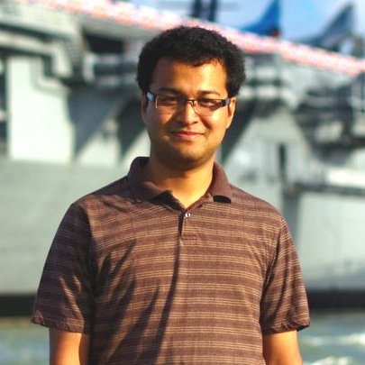

|  | Staff Systems Engineer |
I got my PhD degree in Electrical and Computer Engineering at UT Austin in 2013, under the guidance of Prof. Sriram Vishwanath. I also earned my MSE degree in Electrical and Computer Engineering from UT Austin in 2010, and obtained my Bachelors degree in Electrical Engineering from Indian Institute of Technology (IIT) Kanpur, India, in 2008.
My research interests lie in the topics of Wireless Communication, Graphical Models and Information Theory.
"Learning Structure of Power-Law Markov Networks," IEEE ISIT 2014, Honolulu, USA. (pdf)
"Linear Network Coding for Multiple Groupcast Sessions: An Interference Alignment Approach," IEEE ITW 2013, Seville, Spain. (arXiv)
"On Finite Alphabet Compressive Sensing," IEEE ICASSP 2013, Vancouver, Canada. (arXiv)
"Learning Markov Graphs up to Edit Distance," IEEE ISIT 2012, Boston, USA. (pdf)
"Random Mobility and the Spread of Infection," IEEE INFOCOM 2011, Shanghai, China. (pdf)
"Network Coding for Three Unicast Sessions: Interference Alignment Approaches," IEEE Allerton 2010, Monticello, USA (invited). (pdf)
"Network Coding for Multiple Unicasts: An Interference Alignment Approach," IEEE ISIT 2010, Austin, USA (finalist for Best Student Paper Award). (arXiv)
"On Algebraic Traceback in Dynamic Networks," IEEE ISIT 2010, Austin, USA. (arXiv)
"Precoding-based Network Alignment for Three Unicast Sessions," to appear in IEEE Trans. on Information Theory, 2015. (arXiv)
"Epidemic Spreading with External Agents," IEEE Trans. on Information Theory, 2014. (arXiv)
"Analysis of Laser and Detector Placement in MIMO Multimode Optical Fiber Systems," Journal of Optical Comm. and Networking, 2012 (pdf).
"Bit Error Rates for Ultrafast APD Based Optical Receivers: Exact and Large Deviation Based Asymptotic Approaches," IEEE Trans. on Communications, 2009. (pdf)
"Linear Network Coding for Groupcast Sessions: An Interference Alignment Approach," IEEE ITW 2013, Seville, Spain.
"Learning Markov Graphs Up To Edit Distance," IEEE ISIT 2012, Boston, USA.
"Spread of Influence in Cellular Social Networks," MIT WIDS 2011, Cambridge, USA.
"Network Coding for Multiple Unicasts: Achieving Half the Mincut per User," IEEE ISIT 2010, Austin, USA